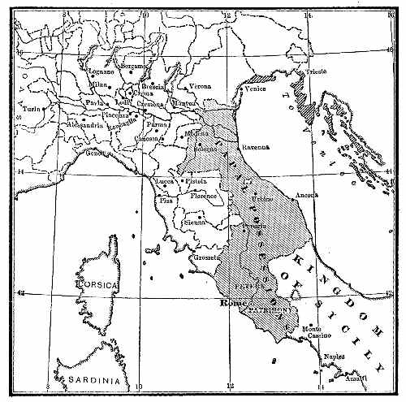

유럽 · 이탈리아
롬바르디아 동맹 — 서로 경쟁하던 도시들은 왜 손을 잡았을까
12세기 북이탈리아 도시와 황제, 자치권을 둘러싼 연대

도시의 자치는 성벽만으로 지킬 수 없었다. 12세기 북이탈리아의 도시들은 시장과 세금을 관리하고 자기 일을 스스로 결정하려 했지만, 황제도 그 지역의 권리를 주장했다. 서로 경쟁하던 도시들은 처음부터 한편이 아니었다. 밀라노가 무너지는 데 이웃 도시가 협력하기도 했다. 그런데 얼마 뒤 그들은 황제에 맞서는 동맹을 만들었다. 무엇이 경쟁자를 동료로 바꾸었을까.
01. 상업이 자라자 도시의 결정도 중요해졌다
북이탈리아의 도시에는 장인과 상인, 도시의 유력 가문이 모였다. 장사가 커질수록 시장 질서를 정하고 통행료를 거두며 분쟁을 해결하는 권한이 중요해졌다. 이런 일을 누가 맡는지가 도시의 수입과 주민의 활동에 영향을 주었다.
도시는 이전 통치자나 주교가 행사하던 권리를 점차 자기 손으로 운영했다. 그러나 실제로 행사해 온 권한과 문서로 인정받은 권한은 항상 일치하지 않았다. 바로 그 틈에서 황제의 주장과 도시의 관행이 부딪쳤다.
02. 황제는 오래된 법에서 권리를 찾았다
프리드리히 1세는 이탈리아에 대한 제국의 권위를 강화하려 했다. 1158년 론칼리아의 회의에는 로마법을 연구한 볼로냐의 법학자들도 불려 왔다. 황제가 어떤 통치 권한을 갖는지 오래된 법을 통해 정리하려는 자리였다.
관리 임명과 세금, 화폐, 통행료 같은 권한이 논의되었다. 도시는 자신이 그것을 합법적으로 얻었다는 증거를 내놓아야 할 수 있었다. 오래도록 스스로 처리한 일이 있다는 사실만으로 황제의 요구를 막기는 어려웠다.
법학자는 단지 책 속의 지식을 설명하는 사람이 아니었다. 오래된 법을 어떻게 해석하느냐에 따라 현재의 세금과 통치권이 달라질 수 있었다. 볼로냐의 학문과 북이탈리아의 정치가 이어지는 장면은 지식의 권위가 도시의 현실과 가까웠음을 보여 준다.
03. 한 도시의 패배가 모두의 교훈이 되었다
황제의 관리는 도시의 자치와 수입을 압박했다. 저항한 밀라노는 포위 끝에 1162년 심각한 파괴를 겪었다. 그러나 밀라노가 이웃 도시 모두의 사랑을 받은 것은 아니었다. 지역 경쟁자 중에는 그 몰락을 반긴 세력도 있었다.
강력한 경쟁 도시가 약해지면 당장은 이익일 수 있다. 하지만 황제가 한 도시에 강요한 조건은 다른 도시에도 적용될 수 있었다. 밀라노의 운명은 경쟁자의 불행인 동시에 다음에는 자기 도시가 겪을 수 있는 일이 되었다.
04. 연대는 같은 마음에서만 생기지 않았다
여러 도시가 협력한 롬바르디아 동맹은 공동 방어의 틀이 되었다. 밀라노도 다시 힘을 얻었고, 교황 알렉산데르 3세의 지원은 황제에 맞서는 도시들에 도움이 되었다. 도시들의 갈등은 제국과 교황 사이의 더 큰 대립과 연결되었다.
이들이 한 민족 국가를 세우기 위해 모인 것은 아니었다. 서로 다른 도시의 지배층이 자치권을 지키려는 이해에서 협력했다. 공동의 위험이 있어도 구체적인 비용과 책임을 나누는 일은 계속 조정해야 했을 것이다.
도시들은 각자의 이름과 제도를 유지한 채 힘을 합쳤다. 하나가 되어야만 협력할 수 있는 것은 아니었다. 공동 방어와 개별 도시의 자치가 함께 가능할지 시험한 셈이다.
05. 새 도시를 세우는 것도 방어 방법이었다
동맹의 활동에는 군대를 함께 내는 일만 있었던 것이 아니다. 황제의 움직임에 대응하기 위한 새로운 거점으로 알레산드리아가 만들어졌다. 그 이름에는 동맹을 도운 교황 알렉산데르 3세와의 관계가 남아 있다.
지도에서 도시 하나가 늘어난 사건을 건물과 인구의 증가로만 볼 수 없다. 성벽과 위치, 통행로는 정치적 전략이기도 했다. 도시를 건설하는 일은 군사적 압박을 견디며 다른 도시와 협력할 기반을 만드는 선택이었다.
06. 전투의 승리와 법적 인정은 달랐다
1176년 레냐노 전투에서 황제의 군대는 동맹에 패했다. 그러나 전투 한 번으로 모든 권리 문제가 저절로 해결되지는 않았다. 이후 협상이 이어졌고, 1183년 콘스탄츠 평화는 도시들이 행사하는 여러 자치권을 인정하는 중요한 계기가 되었다.
동시에 제국과의 관계도 남았다. 황제가 모든 것을 잃고 도시가 완전히 제약 없는 독립국이 되었다는 구도는 정확하지 않다. 싸움의 결과를 지속되는 제도로 바꾸려면 서로의 권리와 의무를 다시 정해야 했다.
휴전과 평화의 사이에도 시간이 흘렀다는 점은 중요하다. 전투를 멈추는 합의가 먼저 이루어져야 상대의 행동을 지켜볼 수 있고, 그 뒤에 오래 지킬 조건을 정할 수 있다. 1176년의 승리와 1183년의 평화를 함께 읽으면 무력과 외교의 역할이 구분된다.
07. 도시의 자유는 누구의 자유였을까
함께 실은 지도는 후대 교재가 정리한 12세기 이탈리아의 도시들이다. 동맹이 실제 사용한 작전 지도는 아니다. 여러 도시가 가까운 거리에 있으면서도 별개의 이해관계를 가졌다는 점을 떠올리는 데 도움이 된다.
도시가 황제로부터 자치를 얻었다고 모든 주민이 같은 정치적 발언권을 누린 것은 아니었다. 도시 내부에도 신분과 재산, 가문에 따른 차이가 있었다. 롬바르디아 동맹은 협력의 힘을 보여 주지만, 자유라는 말이 가리키는 주체를 구체적으로 물어야 하는 역사이기도 하다.
이야기의 바탕이 된 자료
- James Harvey Robinson, An Introduction to the History of Western Europe ↗확인일 2026-11-11
1158년 론칼리아와 볼로냐 법학자·regalia·1162년 밀라노 파괴·도시 동맹/알레산드리아·1176년 레냐노·1183년 콘스탄츠. 독립이라는 옛 교재의 표현을 무제약 주권으로 옮기지 않음.